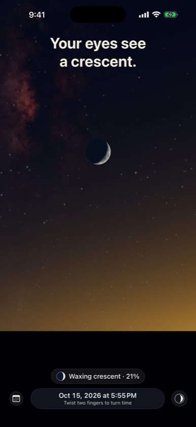
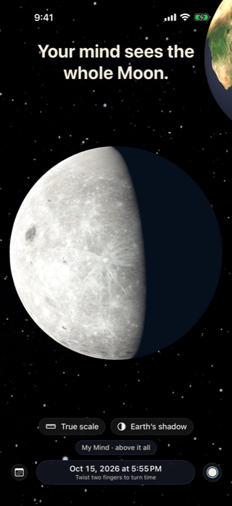
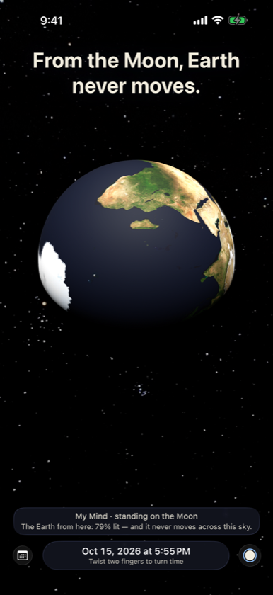

Your eyes see a crescent. Your mind knows the Moon is never a crescent. Two Egoes is one continuous sky you can stand anywhere in — your own horizon, the Moon, the Sun, or high above it all.



Stand on the Moon
The Earth hangs still in the lunar sky, with phases opposite to the Moon’s.
Why not every month?
The Earth’s shadow at the Moon’s distance, at true proportions, and the 5° tilt that decides every eclipse.
Nothing stands still
Sitting in your chair, you travel about 30 km around the Sun every second.